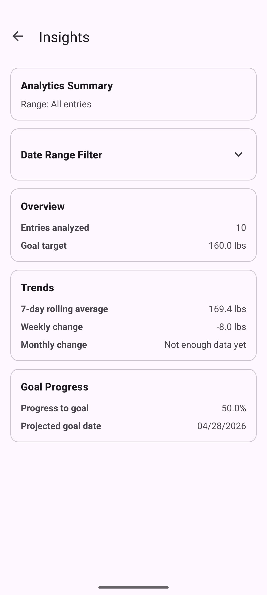

About the artifact
For this enhancement, I continued building on the same Mere Metrics: Weight Tracker project I had been refining throughout the capstone. This is the Java Android app originally built in a mobile architecture and programming course, developed in Android Studio. In the software engineering enhancement, I had improved the overall structure of the app by refactoring it into clearer layers and replacing the manual history table with a RecyclerView-based design. For this enhancement, I focused on the algorithms and data structures category by expanding the existing weight history feature into more of an analytics engine. Instead of only showing past entries as a list, the app now processes historical weight data in more meaningful ways and gives the user better insight into trends, progress, and filtered time periods.
Why I included this artifact
I selected this artifact again because the weight history feature already gave me a strong starting point for more advanced data processing. Using the same project across enhancements also helps keep the ePortfolio cohesive while still allowing each enhancement to stay distinct. In the original version, the app stored history entries and displayed them to the user, but it didn’t really provide any analysis beyond showing the saved rows. With this enhancement, I improved the artifact by normalizing dates into a consistent format for processing, keeping entries in chronological order, adding date-range filtering, and calculating rolling averages, weekly and monthly change, percent progress toward the user’s goal, and a projected goal date. I also refined the logic for determining goal direction and identifying the first date the goal was actually reached when the user had already met it. These changes demonstrate algorithm design, data structure selection, searching, range-based processing, and the ability to turn stored data into more useful information for the user.
Course outcomes alignment
This enhancement met the course outcomes I originally planned to address in my enhancement plan. I focused on outcomes 2, 3, and 4, with outcome 3 being the main focus for this category. It most directly supports outcome 3 because the enhancement required me to design and evaluate a better computing solution for handling historical weight data. I moved the application beyond simple storage and display by adding normalized processing, filtered views, rolling calculations, and goal-based analytics. It also supports outcome 2 because I’m clearly explaining the enhancement, the design choices, and the reasoning behind the improvements through the narrative and supporting project materials. It supports outcome 4 because the enhancement applies practical techniques and tools to provide more value to the user by turning a simple history list into a more informative analytics feature. I don’t have any major changes to my outcome coverage plan. Outcome 5 continues to be addressed more directly in the database enhancement, although I still continued using validation and defensive handling practices in this enhancement as part of the overall app design.
Performance and complexity
The enhancement is backed by a small set of deliberate algorithmic choices that keep filter changes responsive even as a user’s history grows.
Normalization is done once per screen load. The raw weight history is parsed, converted to ISO epoch days, validated, and sorted into a NormalizedWeightSeries backed by a primitive long[]. This initial pass runs in O(n log n) time (dominated by the sort), where n is the number of stored entries. Using a primitive array rather than a boxed List<Long> keeps memory overhead low and avoids per-entry allocation during later reads.
Filter-range lookups are binary-searched. The date-range filter uses lowerBound and upperBound implementations that run in O(log n) rather than scanning the full history for every filter change. This matters because the insights screen allows filter changes at interactive speed; a linear scan would re-visit the entire stored history every time the user picked a different date range.
Per-filter calculations are linear in the filtered window. Once the start and end indices are located, the rolling 7-day average, weekly change, monthly change, and percent-progress calculations each run in O(k) time, where k is the number of entries in the active date range. The first-goal-reached scan also runs in O(k) worst case and exits early when a match is found.
Goal direction is stabilized against the full history. To avoid a filter accidentally reversing the goal’s direction (for example, making a weight-loss goal look like a weight-gain goal when only recent entries are visible), the direction baseline is always taken from the first entry in the full series rather than from the filtered window. Goal reached detection still reflects the latest entry in the active range, so the filter affects what the user sees without corrupting the underlying target.
Trade-offs I made deliberately: I chose the one-time normalization over a re-parsing approach because the history screen is opened and filtered repeatedly while the app is running, so amortizing the sort cost across many filter operations gives a better overall experience than re-sorting each time. I chose primitive long[] storage over List<LocalDate> to reduce object churn. I chose binary-search boundary lookups over linear filtering because the series is maintained in chronological order by construction, which makes the ordered-access pattern a natural fit.
Reflections on the enhancement process
Through this enhancement, I learned that building a stronger analytics feature depends just as much on choosing the right way to represent the data as it does on writing the calculations themselves. One of the biggest lessons for me was seeing how much easier the rest of the feature became once the history data was normalized into a format that could be searched, filtered, and reused more consistently. I also learned that algorithmic improvements are not just about making something faster in theory. They’re also about making the logic more reliable, reusable, and easier to work through when different user inputs and edge cases come up.
One of the biggest challenges I faced was fixing the goal-direction logic so that filtering the date range wouldn’t accidentally turn a weight-loss scenario into a weight-gain one, or the other way around. Solving that problem made me think more carefully about what information should come from the full history and what should come from the active filtered range. Another challenge was making sure the goal-reached date and projected-goal-date behavior stayed meaningful in both in-progress and already-reached situations. Writing tests for boundary cases, single-entry histories, and filtered views helped me catch assumptions that weren’t obvious at first. Overall, this enhancement gave me more confidence in applying algorithms and data structures to a real application problem and in explaining the design choices behind those improvements.
The analytics view
The weight insights screen, reached from the main tracker. This screen did not exist in the original application and shows the user-facing result of the analytics enhancement.
